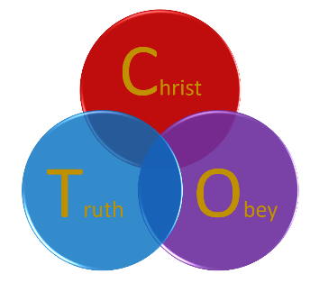

<span class="big">我有过怀疑，现在成为我的信仰。愿你也得着这最宝贵的救赎，无价的恩典。来吧，寻找的必寻见.....</span>
<span class="big">诚挚邀请您参加自**2016年11月15日晚7-9时**在**华侨城**的免费课程，一起踏上探索信仰之旅。</span>
报名邮箱：<a href="mailto:tcochurch@aliyun.com">tcochurch@aliyun.com</a><br>
微信：laodong_tco
<table>
<tr><td>11/15</td><td>认识圣经</td><td>《圣经》是神话还是神的话？</td> </tr>
<tr><td>11/22</td><td>认识创造</td><td>神创造我们的目的？</td> </tr>
<tr><td>11/20</td><td>认识罪</td><td>人之初，性本善？</td> </tr>
<tr><td>12/06</td><td>认识耶稣</td><td>神为我们经历死亡？</td> </tr>
<tr><td>12/13</td><td>认识洗礼</td><td>洗礼的意义何在？</td> </tr>
</table>
<center></center>